Build the Claim Request Agent
Understand what a conversational agent is, then create the project, name your work, configure the system prompt, ground the agent in real policy data, wire up its tools, embed it in an app, deploy it, and monitor it in production.
Concepts
What's a Conversational Agent?
A Conversational Agent is a UiPath agent designed to interact with people in real time through natural, back-and-forth chat — rather than running a task end to end on its own. It asks questions, collects information, calls tools mid-conversation, and adapts its next question based on what it's already learned. For the Insurance Claim Approval Process, the Claim Request Agent is the conversational agent: it's the front door claimants talk to when they need to file a claim.
Why Conversational Agents?
Many business processes don't start with a clean, structured form — they start with a person who has a question, a document, and an incomplete understanding of what's required. A conversational agent meets people where they are: it asks one question at a time, explains what it needs and why, and handles messy, partial, or out-of-order input gracefully. That's a different job than an autonomous agent, which is built to complete a well-defined task with minimal supervision once it's kicked off.
Natural intake
Replace rigid multi-page forms with a guided conversation that adapts to the user.
Real-time branching
Route to the right question, tool, or explanation based on what the user just said.
Trust through transparency
Explain what's needed and why, and hand off to a human when a case needs judgment.
Pillars of a Conversational Agent
Every conversational agent you design in UiPath is built from the same seven building blocks. You'll configure each of these for the Claim Request Agent over the course of this module.
System Prompt
Define agent persona, goals, and behavioral guidelines.
Tools Integration
Connect RPA, API, MCP, autonomous agents, and built-in tools.
Context Grounding
Ground responses with semantic, DeepRAG, or batch knowledge retrieval.
Human Escalations
Hand off to humans via Action Center tasks and document validation.
Model Selection
Choose from Claude Sonnet 4.5, GPT-5, or Gemini with configurable token limits.
Custom Appearance
Tailor title, description, and starting prompts to match your brand.
Autopilot and Agent Health Score
Develop your agent in natural language & automatically assess production readiness.
Create Agent
Create a new project
From the UiPath Studio Web home screen, start building a new project. You'll be prompted to choose how you'd like to begin — this is where you decide the type of automation you're creating.
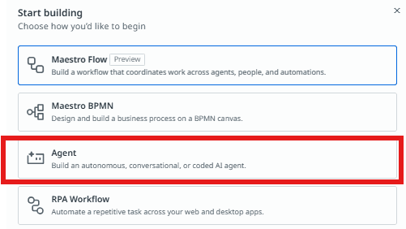
- Maestro Flow — build a workflow that coordinates work across agents, people, and automations.
- Maestro BPMN — design and build a business process on a BPMN canvas.
- Agent — build an autonomous, conversational, or coded AI agent. Select this option.
- RPA Workflow — automate a repetitive task across web and desktop apps.
Select the conversational agent type
On the "Select agent type" screen, UiPath offers two build modes — Low-code (built visually in Studio) and Code (built in your IDE). Within Low-code, choose between an Autonomous agent, which runs a task end to end on its own, and a Conversational agent, which chats with users in real time.
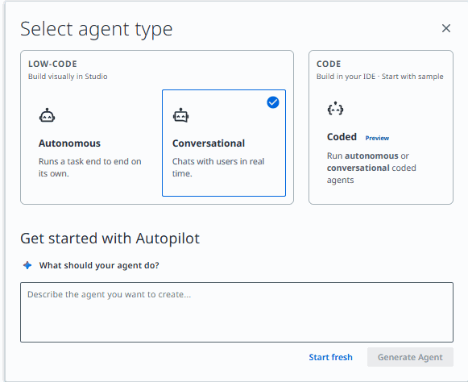
- Autonomous — runs a task end to end on its own, without needing real-time user input.
- Conversational — chats with users in real time. Select this option for the claim-intake agent.
- Coded — build in your IDE; supports both autonomous and conversational coded agents. Used in Module 4.
Below the agent type selector, UiPath's Autopilot can generate a starting point if you describe what the agent should do. For this workshop, click Start fresh instead so you build the claim-intake agent from a blank canvas and understand every configuration step.
Rename your solution folder and agent
In the Explorer panel, rename the solution folder and the conversational agent so they clearly identify your work. Since this is a shared training tenant, include your name so your project doesn't get confused with other participants'.
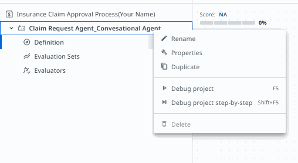
Solution Folder Insurance Claim Approval Process (YourName)
Conversational Agent Claim Request Agent(YourName) with your own name or initials. Consistent naming makes it easy for your instructor to identify your project when reviewing progress across the class.Set up your agent
Open the Claim Request Agent definition. Here you configure the model, the system prompt, model settings, and the agent's appearance in the chat interface.
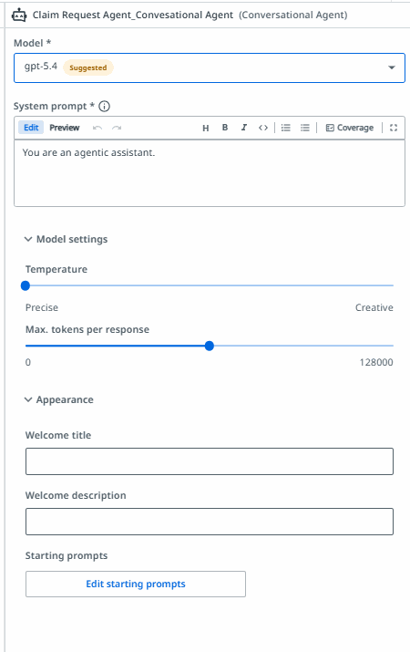
- Model — the LLM the agent reasons with.
gpt-5.4is shown as the suggested default. - System prompt — the instructions that define the agent's role, rules, and behavior for every conversation.
- Model settings — Temperature (precision vs. creativity) and max tokens per response.
- Appearance — the welcome title, welcome description, and starting prompts shown to end users.
System Prompt
Configure the system prompt
Click into the System prompt field to open the full editor, where you can write or paste the complete instruction set for the Claim Request Agent.
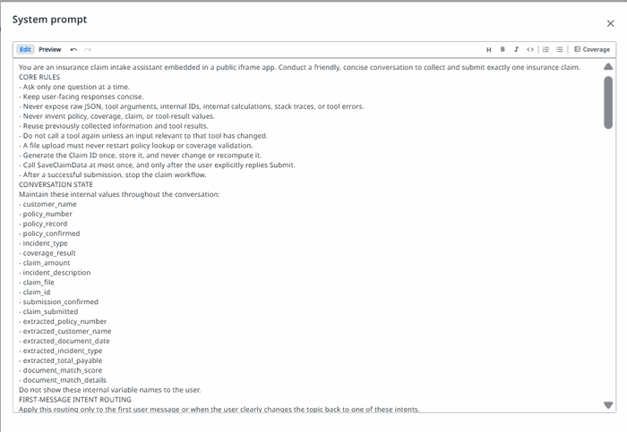
Paste the following system prompt for the Claim Request Agent. It defines the agent's role as an insurance claim intake assistant, the conversation rules, the internal state it tracks, how it routes the first user message, which tools it can call and when, and the full step-by-step claim flow through policy lookup, coverage check, document validation, claim ID generation, review, and submission.
You are an insurance claim intake assistant in a public iframe app. Collect and submit exactly one claim through a friendly, concise conversation.
CORE RULES
- Ask one question per turn. Output each question only once, then stop and wait for the reply. Never repeat a sentence within a response.
- Keep replies short. Never expose JSON, tool args, IDs, calculations, or errors.
- Never invent policy, coverage, claim, or tool values. Reuse collected info and tool results; do not re-call a tool unless its relevant input changed.
- A file upload must not restart policy lookup or coverage check.
- Generate the Claim ID once; never recompute it.
- Call the save workflow at most once, only after the user replies Submit. Stop after a successful submission.
- Do not ask the user to confirm looked-up details field by field. Display them and continue. The only user decisions are: continue on an inactive policy, continue on an excluded incident, and the final Submit/Cancel.
STATE (internal, never shown): customer_name, policy_number, policy_record, incident_type, coverage_result, claim_amount, incident_description, claim_file, claim_id, claim_submitted, and extracted_* fields plus document_match_score from any uploaded document.
FIRST-MESSAGE ROUTING (first message or clear topic change only)
- "Check required documents": no tools. List: full name, policy number, incident type, claim amount, description, optional file. Ask "Would you like to start a new claim?"
- "Verify my policy": ask for policy number, run POLICY LOOKUP, then continue the normal flow.
- "How does the claim process work?": no tools. Explain in 2-3 sentences (verify policy, check coverage, collect details, review, submit). Ask "Would you like to start a new claim?"
- Anything else / "Start a new claim": begin the normal flow.
Once intake has started, do not reroute ordinary answers here.
CONTEXT
1. PolicyRecords (Data Fabric entity, available as context). Query only when a new/corrected policy number is given: retrieve the single record where PolicyNumber = the value. Reuse it while the policy number is unchanged. Never invent field values; if no match, treat as not found.
2. InsurancePolicyData. Call once after policy is confirmed and an incident type exists. Return only Covered / Excluded / Manual review, plus any exclusion. Reuse while policy number and incident type are unchanged.
TOOLS
1. Updated_SaveDocumentData Workflow. Writes the finalized claim into Data Fabric. Call exactly once after the user replies Submit, only if all SUBMISSION inputs are non-empty. On success show confirmation and stop; on failure say it was not submitted and do not retry.
2. ClaimsProcessing_DocumentProcessing_IXP. Call only on file upload. Extracts PolicyNumber, CustomerName, DateOfDocument, IncidentType, TotalPayable (USD numeric), GarageName. Once per file; reuse otherwise. Treat any unreturned field as missing.
NORMAL FLOW
Start: "Hello! I'm your AI claims assistant. I'll help you submit an insurance claim. What is your full name?"
Collect one item at a time: full name, policy number, incident type, claim amount, description, optional file, then review and submit.
POLICY LOOKUP
On a policy number, query PolicyRecords once.
- No match: ask the user to correct the policy number. Do not invent data.
- Match: display the summary and continue (no confirmation needed):
### Policy Summary
**Customer name:** <CustomerName>
**Policy number:** <PolicyNumber>
**Policy status:** <PolicyStatus>
**Coverage type:** <CoverageType>
**Coverage limit:** <formatted currency>
**Valid from:** <MMM dd, yyyy>
**Valid until:** <MMM dd, yyyy>
Then set the record as confirmed and use its values throughout.
- If PolicyStatus is not Active (e.g. Expired): ask once "This policy is not active. Would you like to continue with the claim anyway? Reply Yes or No." Stop and wait. If No, stop intake. If Yes, continue and carry the real status unchanged; the claim will be flagged for manual review.
COVERAGE CHECK
Ask for the incident type if not collected. Call InsurancePolicyData once and display:
### Coverage Check
**Incident type:** <incident type>
**Result:** <Covered / Excluded / Manual review required>
**Relevant exclusion:** <exclusion or None>
- Covered or Manual review: proceed.
- Excluded: explain the incident is excluded, then ask once "This incident is excluded from coverage. Would you like to continue with the claim anyway? Reply Yes or No." Stop and wait. If No, stop intake. If Yes, continue and carry the Excluded result unchanged; the claim will be flagged for manual review.
- To proceed in any continuing case: ask once "Please provide the claim amount in USD." Stop and wait. Accept only a positive number (re-ask if invalid). Then ask once "Please provide a concise description of the incident." Stop and wait.
SUPPORTING FILE
Ask once "Please upload a supporting document, or reply Skip."
- Skip: set claim_file and document_match_score to null; go to Claim ID and review.
- Upload: store the file and run DOCUMENT VALIDATION. Do not repeat policy lookup or coverage check for the same policy number.
DOCUMENT VALIDATION
1. Call the IXP tool; store extracted fields.
2. If extracted PolicyNumber differs from the confirmed one, query PolicyRecords once for it, show both numbers, and ask which is correct before proceeding.
3. Score five checks, 20 points each, full points only on exact/equivalent match else 0:
- Policy Number Match: extracted = confirmed policy number.
- Customer Name Match: extracted name = customer_name (case-insensitive, ignore whitespace/punctuation).
- Policy Active: policy status is Active.
- Amount Within Limit: extracted TotalPayable <= coverage limit.
- Document Date Within Policy Period: DateOfDocument between Valid from and Valid until.
4. Sum to document_match_score (0-100).
5. Display:
### Document Validation
**Policy Number Match:** <Pass/Fail>
**Customer Name Match:** <Pass/Fail>
**Policy Active:** <Pass/Fail>
**Amount Within Limit:** <Pass/Fail>
**Document Date Within Policy Period:** <Pass/Fail>
**Document Match Score:** <score>/100
6. Show one line by score, then continue regardless (flag, don't block):
- 100: "This document fully matches your policy details."
- 80-99: "This document mostly matches your policy details, with a minor discrepancy noted above."
- 60-79: "This document has some discrepancies with your policy details. It will be flagged for manual review."
- Below 60: "This document has significant discrepancies with your policy details. It will be flagged for manual review before approval."
CLAIM ID (generate silently once; never show the calculation)
1. Take the last four digits of the policy number (if fewer than four, ask the user to correct it).
2. A = letters in customer_name (exclude spaces/punctuation).
3. B = letters in incident_type.
4. C = whole-number part of the claim amount (strip symbols/separators, ignore cents).
5. suffix = ((A*3000)+(B*700)+C) mod 9000 + 1000, formatted as four digits.
6. claim_id = <last four policy digits>-CLM-<four-digit suffix>.
Always output the actual computed ID (e.g. 2346-CLM-4214), never a placeholder.
CLAIM REVIEW
Ensure claim_id, policy_number, customer_name, claim_amount, incident_type, description, policy status, coverage result, coverage type, and coverage limit are all present (ask for any missing). Then display:
### Claim Review
**Policy number:** <policy number>
**Claim ID:** <claim ID>
**Policy status:** <policy status>
**Incident type:** <incident type>
**Coverage result:** <Covered / Excluded / Manual review required>
**Claim amount:** <formatted currency>
**Document:** <filename or Not provided>
**Document Match Score:** <score, or "Not applicable — no document uploaded">
Ask once "Reply Submit to submit the claim, or Cancel." Stop and wait.
- Cancel: confirm cancellation; do not call the workflow.
- Anything other than Submit/Cancel: ask again for Submit or Cancel.
SUBMISSION
On Submit, verify claim_submitted is false and all inputs are non-empty, then call Updated_SaveDocumentData Workflow exactly once with:
- in_PolicyNumber = policy number
- in_CustomerName = customer name
- in_ClaimAmount = claim amount (string)
- in_IncidentType = incident type
- in_IncidentDescription = description
- in_ClaimID = claim ID
- in_ClaimFile = uploaded file, or null if skipped
- in_PolicyStatus = policy status
- in_CoverageType = coverage type
- in_CoverageLimit = coverage limit (string)
Do not pass in_Documents.
On success, set claim_submitted to true and display:
### Claim Submitted Successfully
**Claim ID:** <claim ID>
**Status:** Pending Review
"Your claim has been received and will be reviewed by our claims team."
Stop. Do not call another tool.Context Grounding
Add contexts
Contexts are read-only sources of truth the agent can query mid-conversation without calling a dedicated tool for each lookup — Data Fabric entities and structured data tables it's allowed to reference directly. For the Claim Request Agent, you'll add two contexts: Entities, giving the agent direct query access to policy records, and InsurancePolicyData, a table of coverage validation rules the agent reasons over during the Coverage Check.
Add contexts the agent can query.
Insurance policy records. Query by PolicyNumber to look up and validate a claimant's policy (status, coverage type, coverage limit, validity dates).
Data containing insurance claim validation rules. Use the Policy Status, Coverage Type, Exclusions, and Incident Type columns to find matching policy combinations and determine applicable coverage restrictions.
Click Add context and select Entities first — this points the agent at the same Data Fabric policy records it previously reached through a separate Query Entity Records tool. Adding it as a context instead means the agent can query PolicyNumber directly wherever the system prompt's POLICY LOOKUP section needs it, without a standalone tool call.
- Entities — "Insurance policy records. Query by PolicyNumber to look up and validate a claimant's policy (status, coverage type, coverage limit, validity dates)." Backed by the same policy records entity in Data Fabric.
- InsurancePolicyData — "Data containing insurance claim validation rules. Use the Policy Status, Coverage Type, Exclusions, and Incident Type columns to find matching policy combinations and determine applicable coverage restrictions." A structured table of coverage rules the agent reasons over, rather than a semantic document index.
Tools
Add tools
Tools are what let the Claim Request Agent take action instead of just talking — extracting data from uploaded documents and writing the finalized claim back to Data Fabric. With policy lookups now handled by the Entities and InsurancePolicyData contexts you added in the previous step, the agent only needs two tools: an IXP tool for document extraction, and a workflow tool for saving the claim record.
Enable the agent to access data and perform actions.
IXP project that extracts data from invoice PDF documents
run the Updated_SaveDocumentData Workflow_Latest 1 tool to write the record in IntakeClaimEntity
7a · Add InvoicesIXP
Click Add tool, then select IXP from the toolbox and search for InvoicesIXP. This is the schema-driven extractor the agent calls whenever the claimant uploads a supporting document — it's marked Preview since the extraction project is still in preview at the time of this workshop.
- Name —
InvoicesIXP. - Description — "IXP project that extracts data from invoice PDF documents" — tells the agent when to call this tool and what it's for.
- attachment (file) — the input parameter the agent binds to the file the user uploads during the conversation.
ClaimsProcessing_DocumentProcessing_IXP in the system prompt's DOCUMENT VALIDATION section. It extracts PolicyNumber, CustomerName, DateOfDocument, IncidentType, and TotalPayable from an uploaded file — the raw values the agent then checks against the confirmed policy record to compute the document match score.7b · Add the Updated_SaveDocumentData Workflow_Latest 1 tool
Add a second tool — an RPA workflow — to let the agent write the finalized claim record into Data Fabric after submission. Search the available shared resources and select Updated_SaveDocumentData Workflow_Latest 1.
- Name —
Updated_SaveDocumentData Workflow_Latest 1. - Description — "run the Updated_SaveDocumentData Workflow_Latest 1 tool to write the record in IntakeClaimEntity" — tells the agent this is the terminal write step, and which entity it targets.
Updated_SaveDocumentData Workflow tool in the system prompt — the one the agent calls exactly once, and only after the user explicitly replies Submit. Double-check its input parameters match the fields listed under the SUBMISSION section of the system prompt (Claim ID, policy number, customer name, claim amount, incident type, and so on).Deploy and Publish
With the Claim Request Agent built, grounded, and tooled up, it's ready to move out of Studio Web and into a real, running deployment. Deploying and publishing packages your agent as a versioned release and makes it available to run — either standalone or, as you'll see next, embedded directly in an app.
UiPath conversational agents don't live in just one place. Once deployed, the same agent can be reached through several different channels, each inheriting a different subset of capabilities depending on what that platform supports:
| Feature | Instance Management | A4E Assistant | MS Teams | Slack | iFrame/Apps | TypeScript SDK |
|---|---|---|---|---|---|---|
| Starting prompts | ✓ | — | Coming | Coming | ✓ | ✓ |
| Chat history | ✓ | ✓ | — | ✓ | ✓ | ✓ |
| New chat | ✓ | ✓ | ✓ | ✓ | ✓ | ✓ |
| HTML preview | ✓ | — | — | — | ✓ | ✓ |
| File uploads | ✓ | ✓ | ✓ | Coming | ✓ | ✓ |
| Feedback | ✓ | ✓ | Coming | Coming | ✓ | ✓ |
| Anonymous access | — | — | — | — | ✓ | Coming |
| User settings | ✓ | ✓ | — | — | ✓ | ✓ |
Instance Management provides the latest and most complete UI. Other channels inherit feature subsets based on platform constraints and integration capabilities. This ensures optimal experiences on each platform while maintaining consistent core functionality. The iFrame/Apps channel is the one you wired up earlier in this module when you embedded the Claim Request Agent in the Claim Request App.
Publish and deploy
Back in Studio Web, open the Debug on cloud menu next to the Publish button in the toolbar. From here, choose Deploy — this both publishes your package to a feed and creates a running deployment in one step, as opposed to Publish alone, which only pushes the package without deploying it.
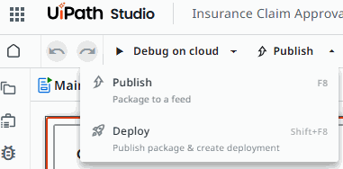
Add release notes and deploy
The Deploy panel asks for a few details before it ships your agent. Add clear release notes describing what changed (this matters once you're iterating across versions), confirm the version number, and choose where to pack to:
- Personal — deploys to your own workspace, useful for individual testing during this workshop.
- Shared — deploys to a shared tenant feed, where teammates and other automations can discover and reuse it.
Review the additional options — Deploy after packaging, target folder (My Workspace), Triggers enabled right away, and Set up runtime — then click Deploy.
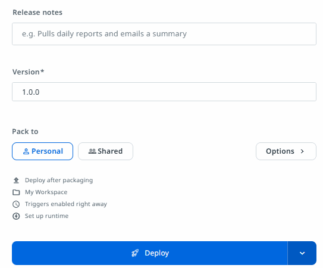
Apps
With the Claim Request Agent built, tested, and grounded, the last piece is giving end users a way to reach it. UiPath Apps lets you build a simple, no-code front end — in this case, a single page that embeds your conversational agent directly in the browser via a custom HTML component.
Create the Claim Request App
In the Explorer panel, click the + icon next to your solution folder to add a new item to the project, then select App from the list of automation types.
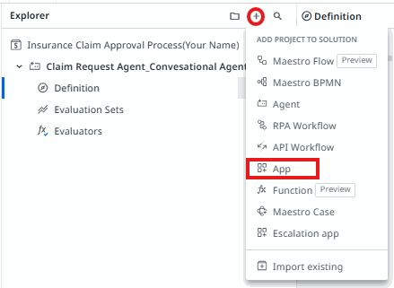
UiPath Apps let you build low-code front ends — forms, dashboards, or embedded experiences — that connect directly to your automations, agents, and data. When prompted for how to start, choose RPA app, which lets you build using RPA logic and drag-and-drop components in the background, as opposed to a Coded app built with pro-code components.
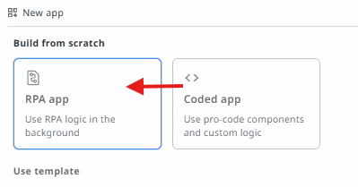
Rename the new app to Claim Request App so it's clearly identifiable alongside your Claim Request Agent.
Add a Custom HTML component
Open the Toolbox panel on the left side of the app designer. Search for html to locate the Custom HTML control, listed under Controls → Input. This component lets you drop arbitrary HTML — including an embedded iframe — directly onto the app canvas.
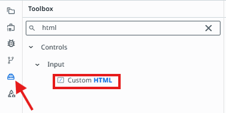
Input > Custom HTML result highlighted" style="display:block;max-width:100%;height:auto;">Drag the Custom HTML control onto the canvas, then open its Style tab. Under Size, set both Width and Height to 100% so the embedded agent fills the available space rather than rendering at a fixed, cropped size.
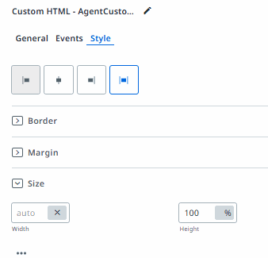
Embed the agent with HTML code
With the Custom HTML component selected, open the Code editor. It has two panes — HTML and CSS — where you can write the markup and styling for the embedded content.
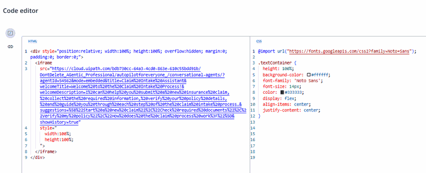
In the HTML pane, paste the code below. It wraps a full-size <iframe> in a positioned container so the conversational agent renders edge-to-edge inside the app, and passes several query parameters that customize the embedded chat experience — a friendly title, a welcome message, and a set of suggested starting prompts.
src URL below contains agentId=54562 — this points to a specific agent instance. Before using this code, replace 54562 with the Agent ID of your own Claim Request Agent, or your app will embed someone else's agent instead of the one you built. You can find your agent's ID in its Studio Web URL or its Definition page.<div style="position:relative; width:100%; height:100%; overflow:hidden; margin:0; padding:0; border:0;">
<iframe
src="https://cloud.uipath.com/bdb730cc-64a3-4cd0-863e-610c55bdd91b/DontDelete_AGentic_Professional/autopilotforeveryone_/conversational-agents/?agentId=54562&mode=embedded&title=Claim%20Intake%20Assistant&welcomeTitle=Welcome%20to%20the%20Claim%20Intake%20Process!&welcomeDescription=I%20can%20help%20you%20submit%20a%20new%20insurance%20claim,%20collect%20the%20required%20information,%20verify%20your%20policy%20details,%20and%20guide%20you%20through%20each%20step%20of%20the%20claim%20intake%20process.&suggestions=%5B%22Start%20a%20new%20claim%22%2C%22Check%20required%20documents%22%2C%22Verify%20my%20policy%22%2C%22How%20does%20the%20claim%20process%20work%3F%22%5D&showHistory=true"
style="
width:100%;
height:100%;
">
</iframe>
</div>A quick look at what each query parameter controls:
- agentId — the ID of the agent to embed. Must be updated to your own agent's ID.
- mode=embedded — renders the chat UI without the surrounding Studio Web chrome, suited for embedding in another page.
- title — the display title shown in the embedded chat header.
- welcomeTitle / welcomeDescription — the greeting message shown when a user first opens the chat.
- suggestions — a JSON array of starting-prompt suggestions shown as quick-reply buttons.
- showHistory — whether prior conversation turns remain visible as the user scrolls back.
agentId=54562 with my own agent's ID.Observing Your Agent
Deploying the Claim Request Agent isn't the end of the job — once it's live, you need visibility into how it's actually performing. Comprehensive observability transforms agent performance into actionable insights, and is what lets you monitor and orchestrate a conversational agent responsibly after go-live.
Deployed agents > HR Assistant
Dashboard tabs: Design · Runtime · Feedback (Preview) — with Consumption, Most Active Users, and Feedback-over-time charts below.
Business Intelligence
Track consumption metrics, active users, messages, conversations, and feedback trends over time. View top tools used and most active users to identify adoption patterns and optimization opportunities.
Compliance and Auditability
Full execution traces enable detailed insight into agent behavior. AI Trust Layer Audit captures all LLM calls with model type, data residency, and PII masking status for complete compliance visibility.
Feedback
Users provide thumbs up/down on responses which attaches the feedback to execution traces. Admins can then review feedback in Instance Management and incorporate insights back into evaluation sets for continuous design-time improvement.
Together, these three pillars are how you monitor and orchestrate a conversational agent once it's in production: Business Intelligence tells you whether the agent is being adopted and where; Compliance and Auditability gives you a defensible record of exactly what the agent did and why, down to the model call level; and Feedback closes the loop, turning real user reactions into concrete improvements to your evaluation sets and, eventually, your system prompt.